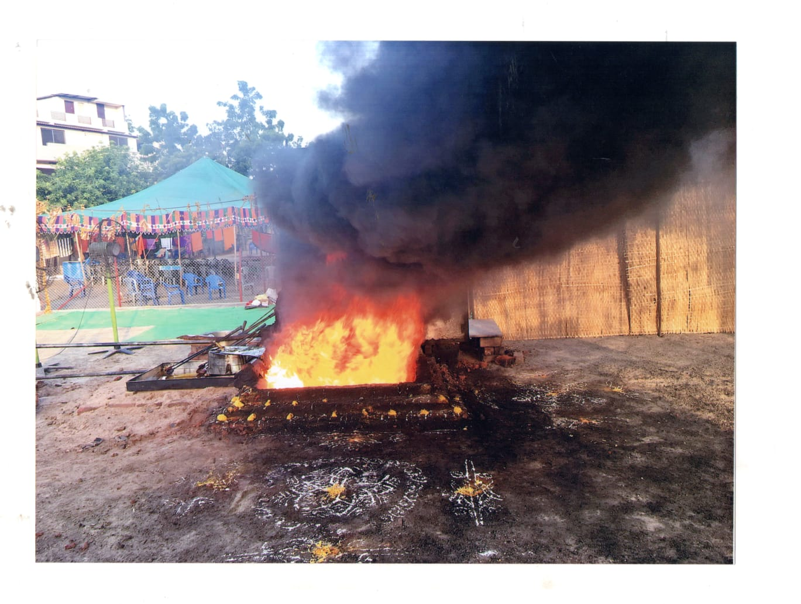
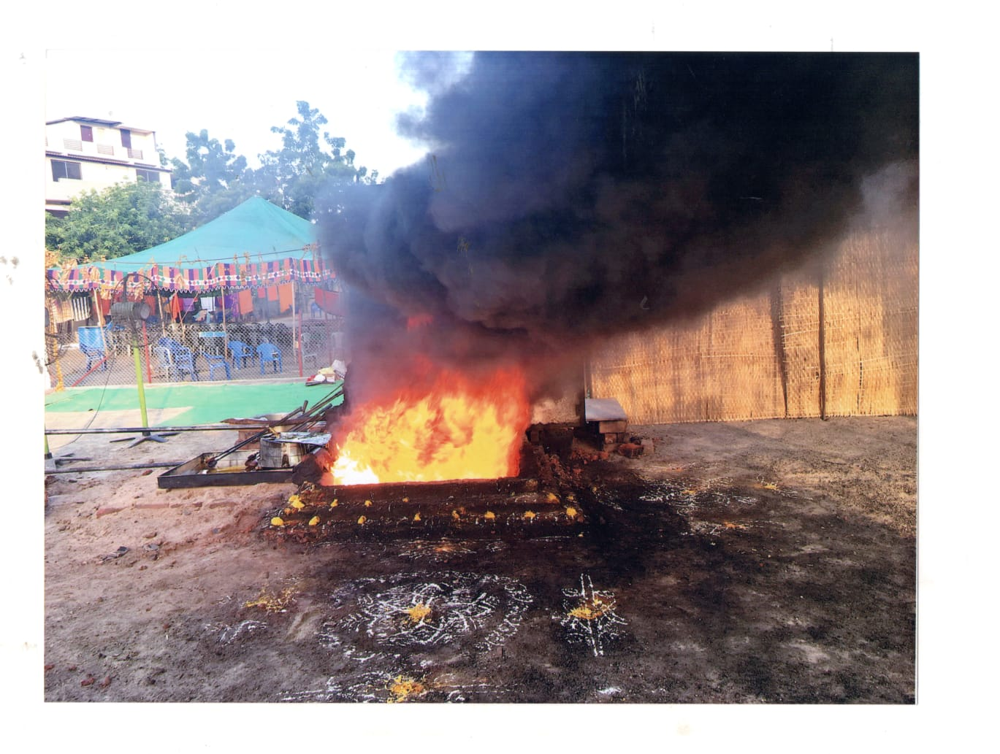

1995 జనవరి 28వ తేదీన అవధూత శ్రీశ్రీశ్రీసూర్యప్రకాశానంద సరస్వతి యోగీంధ్రులు అవతరించింది. గుంటూరు జిల్లా సత్తెనపల్లి తాలుకాః దమ్మాలపాడు స్వాముల వారు జన్మించారు. పుట్టిన కొంత సేపటి వరకు బిడ్డలో చలనము లేదు. కనుక మృత శిశువు పుట్టాడని అనుకొని చిన్నారిదేహాన్ని నైదిబ్బలో పూడ్చి పెట్టారు. కొంత సేపటికి తల్లికి స్పృహ వచ్చి చూస్తే పొత్తిగుడ్డలయందు పాపడులేడు. బిడ్డ కడుపులో వున్నపుడు ఆమెకు కొన్ని దివ్య భావాలు కలిగి వున్నాయి. అందువలన నమ్మక బిడ్డను చూడాలని పట్టుబట్టి పూడ్చిన బిడ్డ దేహన్ని వెలికి తీయించింది. బిడ్డ బ్రతికియుండెను. తల్లి ఆనందమునకు అంతులేదు. ఈ వార్త విన్న ఊరి జనమంత వచ్చి చూచి వెళ్ళినారు. ఒక యోగి అవతరణము ఇలా జరింగింది. తల్లిదండ్రులు ఈ మహనుభావునకు "సూర్యప్రకాశరావు" అని నామకరణము చేశారు.
తండ్రి సుబ్బారావు దమ్మాలపాడులోని ఇల్లు, పోలము అమ్మి కుటుంబాన్ని నరకసరావుపేట మార్చారు. తండ్రి గారు బృందావన భజనకళలో ప్రావీణ్యము సంపాదించి యువకుటెందరికో ఈ కళలో తర్పీదు యిచ్చి గురుస్థానమాక్రమించినారు. ఈ స్వామి వారి ప్రాధమిక విద్యాభ్యానము దమ్మాలపాడులోనే జరిగింది. హైస్కూలు కలేజి చదువులు నరసరావుపేటలో సాగాయి. బియస్సీ గణితము పూర్తి చేసినారు. ఆయన అభిమాన- విషయము "హరయోగము" 1966 జూన్ 6 తేదీన సోమవారము అంటే 11వ ఏట నుండి శ్రీ స్వామి వారు 11కి.మి దూరంలో వున్న కోటప్పకొండ అర్థరాత్రి వేళ ఒంటరిగా కాలినడకన వెళ్ళి శివలింగాన్ని నమకచమకాలో అభిషేకించి, తెల్లవారేలోపల ఇంటికి చేరి అందరిలాగే నిత్యకృత్యాలు నిర్వర్తించేవారు. అ దీక్ష చాలా కాలం రహస్యంగా జరిగింది.. తపోయోగా సాధనవలన శరీరంలో కాంతి, ముఖంలో బ్రహ్మావర్చన్సు వ్యక్తమౌతుండేవి. ఈనాడు వారితో కలిసి అల్లర చిల్లరగా తిరిగే అలవాటు స్వామికి లేదు. నిరంతరాంతమ్మ ఖులైవున్నా ఇంట్లోని వారితో, తోటి పిల్లల్లతో మామూలు వ్యక్తిలాగే ప్రవర్తించేవారు. అయితే హోటళ్ళు, సినిమాలు, కాఫీలు, టీలు, మైదలైన నిషిద్దం. ఆహరం విహరాల్లో నియామాలు పాటిస్తూ వుండేవారు. కనుక తరువాత కాలంలో ఆశ్రమానికి, తపోదీక్షకవి ఎంతో ఉపకరించారు. 1981 ఫిబ్రవరి 5వ తేదీ నుండి క్రమముగా ఆహరము తగ్గిస్తూ యోగా మార్గాన్ని అనుసరించారు.
1982 జూన్ 8వ తేదీ నుండి మౌనవత్రం ఆచరిస్తూ వున్నారు. ఆహరంతో పాటు లౌకిక వ్యాపారాలు మందగించాయి. అంతకు ముందు కొందరు సన్నిహిత మిత్రులు శ్రీవారి వద్ద యోగాసనాలు, శ్రీసూక్త పురుషసూక్తశాంతి మాంత్రిదివేదాధ్యయం చేసి సాధన చేస్తుండేవారు. 1984 ఆగస్టు నెలలో హృషీకేశము యోగాసాధననిమిత్తము ఒక్క శిష్యునితో కలిసి వెళ్లి కొన్ని దినములు గడిపి తిరిగివచ్చారు. కాలం గడుస్తోంది. కఠిన యోగా సాధన నిరాఘాటంగా సాగుతోంది. 1987 ఏప్రియల్ 30వతేదీన కుటుంబ సభ్యులను, నరసరావుపేటను వదిలి ఏకాంత ప్రదేశమైన తపోగిరి బ్రోగలకొండకి) వచ్చి చేరినారు. ఈ ప్రాంతమందు శ్రీ స్వామి వారికొక ఆశ్రమము 1991 లో భక్తులు నిర్మించినారు. "శ్రీ సిద్ధాశ్రమ” మని పేరు 1994 ఆగస్టు 10వతేదీ నుండి దిగం బరులైన మౌనస ముద్రంలో వెలిసి యున్నారు. 2002లో గిద్దలూరు భక్తులు 'ఉద్గాధ చైత్యం ' అనుపేరుతో యజ్ఞశాల నొకదానిని నిర్మించినారు.
 

Email: boggulakondaasramam@gmail.com
Phone:9912316833
Address:Boggulakonda, kukatlapalli Village, ballikurava mandal, Prakasam district
whatsapp number : +91 9912316833